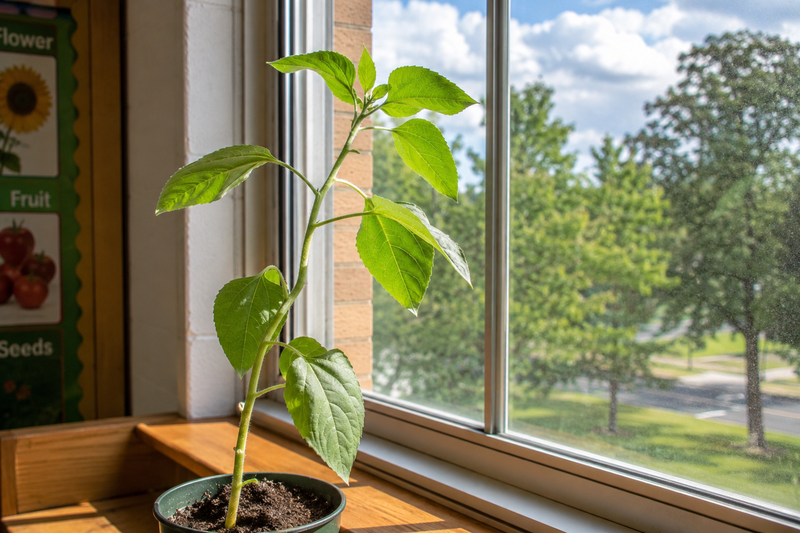
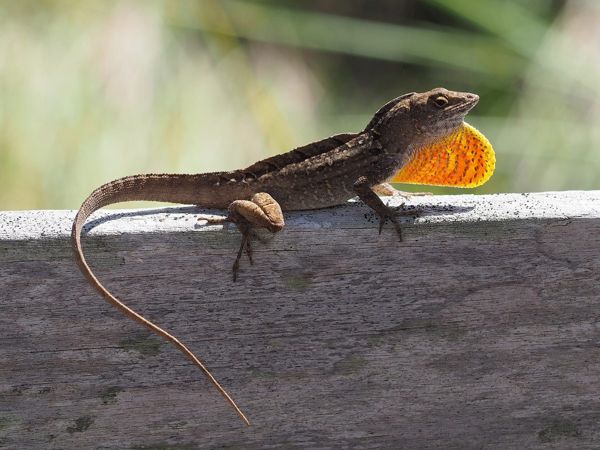

Your lunch gave you energy to run and think. But where did that energy start before it ever reached your plate?
Keep this question in mind as you work through the lesson today.
1explain how plants capture energy from sunlight.
2trace the energy in a food chain back to the sun.
3tell the difference between producers and consumers.
You bite into an apple. Where did the apple's sugar come from? The apple tree. Where did the tree get the material to make sweet fruit? Air, water, and sunlight. The sun is hidden inside that apple, captured by the tree and locked into sugar.
Today you'll follow energy backward, one bite at a time, until you find where it all begins.
Write your prediction below. Use at least two sentences. Predict whether ALL food energy, even meat and eggs, can be traced back to the sun. Explain why you think so. We'll come back to it at the end of the lesson.
These six words are tools you'll use all year. Tap each card to flip it and read the definition. You'll use most of them in your investigation today.
Copy this sentence carefully into your science notebook:
"All food energy starts as sunlight captured by plants."
Then list one thing you ate today and trace its energy back to the sun.

Plants, algae, and some tiny living things are the only ones that can catch sunlight directly. They use leaves to absorb light, pull in carbon dioxide from the air, and combine those with water from the roots. The sun provides the energy that runs the whole process.
The plant stores that energy in sugar. Some sugar powers the plant right away. The rest gets built into leaves, stems, roots, seeds, and fruit. That stored energy is waiting for whatever eats the plant next.
Animals can't make their own food. No matter how long you stand in the sun, you won't get less hungry. So animals are consumersconsumerA living thing that eats other living things to get energy.. They get energy by eating plants, or by eating animals that ate plants.
Producers (plants) start the chain. Consumers (animals) follow. When you eat a salad with chicken, the lettuce captured sun-energy directly. The chicken got its energy from eating other things that ate plants. Either way, every calorie traces back to sunlight.
Follow any food back far enough and you always land in the same place. Milk comes from a cow, the cow ate grass, and the grass caught sunlight. A food chainfood chainThe path food energy takes, from the sun to plants to animals. shows that path, one step at a time.
Along the way, the energy changes form. It arrives as light energy, the plant stores it as chemical energy in its food, and animals use it as energy of motion and give it off as heat.
Real-World Connection: Farmers who raise cattle are really growing grass. More healthy grass means more energy for the cows, which is why ranchers care so much about their pastures.
All food energy on Earth begins with the sun. Plants (producers) capture sunlight through photosynthesis. Animals (consumers) get that energy by eating plants — or by eating other animals that ate plants.
🕸️ Food Webs: How Energy Flows Through Ecosystems
A food chain shows one path of energy — like sun → grass → rabbit → hawk. But in real ecosystems, animals eat many different things! A food web shows all the overlapping food chains in an ecosystem.
In a food web, producers (plants) capture the sun's energy. Consumers get energy by eating producers or other consumers. Decomposers (like fungi and bacteria) break down dead organisms and return nutrients to the soil.
Energy flows through the web, but some is lost as heat at every level. That's why there are usually more producers than consumers — it takes a LOT of plants to support just a few top predators!
Here is one backyard food chain. Tap each box to see where that living thing gets its energy.
Tap each box to follow the energy from the sun to the hawk.
Go Deeper — Energy from long ago
Plants are so good at capturing sunlight that they've been doing it for billions of years. Almost every bit of food we eat — and the oxygen we breathe — comes from this process.
Even gasoline and coal hold old sunlight. They formed from plants and tiny sea creatures that lived millions of years ago. When a car burns gas, it releases energy those ancient plants captured from the sun.
An anole is a small lizard you might spot on a sidewalk or fence. It is one link in a backyard food chain. Your job is to map that chain and trace the anole's energy all the way back.

Read the clues
Grass grows in the yard in full sun. Crickets munch on the grass. Anoles hunt crickets. A red-shouldered hawk swoops down and catches anoles.
| Living thing | What it eats | Producer or consumer? | Where its energy came from |
|---|---|---|---|
| 🌱 Grass | |||
| 🦗 Cricket | |||
| 🦎 Anole | |||
| 🦅 Hawk |
Fill in the map
Complete every row. In the last column, name what that living thing ate. Then ask: where did THAT get its energy?
Draw the chain
In your notebook, draw the chain from the sun to the hawk. Point each arrow from the food to the eater. Arrows show which way energy moves.
Make a claim
Write one sentence: "All the energy in the hawk started as ___." You'll use it in your CER.
Answer in complete sentences. Use your energy map and what you learned in the lesson.
Think about these. Be ready to explain your reasoning out loud or in your notebook.
📐 Part A — Map Today's Meals
Add "Lesson 18.01 — Food Energy from the Sun" to your notebook. Open to a clean page.
📊 Part B — Evidence Questions
Answer in complete sentences using the backyard food chain from Part 4 of The Lesson.
✍️ Part C — Claim · Evidence · Reasoning
Write your scientific explanation using Claim, Evidence, and Reasoning. Aim for 4–6 sentences total.
📋 Write in your own words. Use what you learned about food energy.
Your claim📋 Write in your own words. Use what you learned about food energy.
Your evidence📋 Write in your own words. Use what you learned about food energy.
Your reasoningWrite 3–4 sentences answering these:
- What did you predict at the start? Was it accurate?
- What from the lesson changed or confirmed your thinking?
- How is your final explanation more complete than your first prediction?